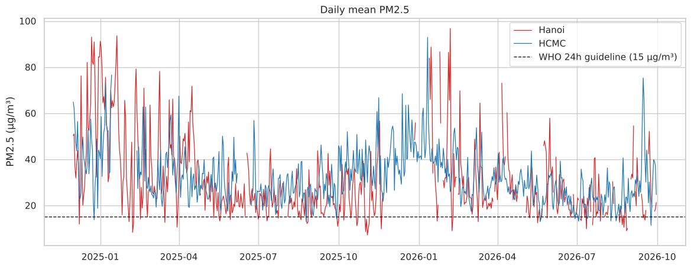
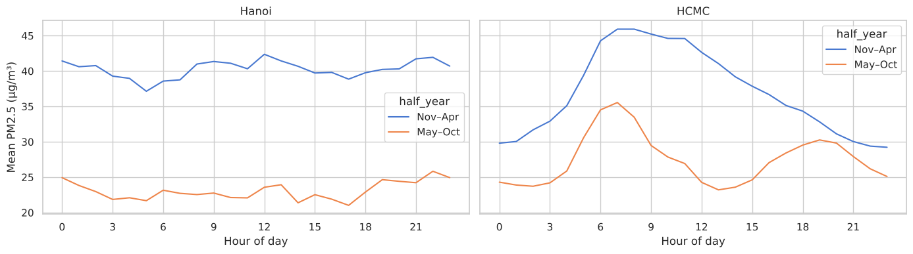
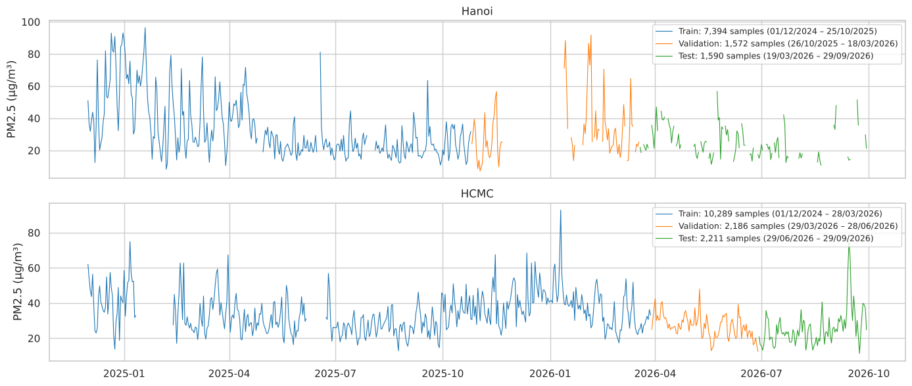
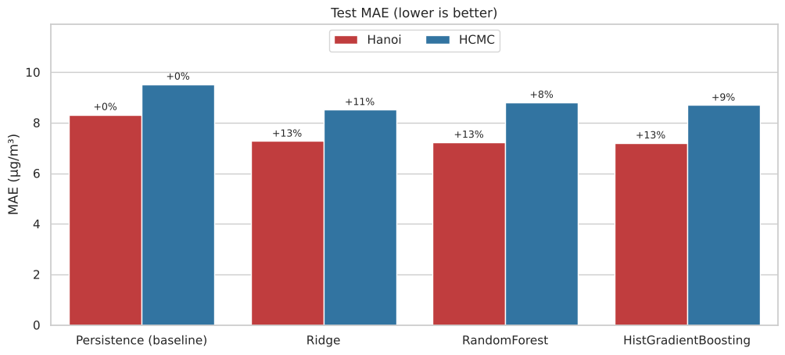
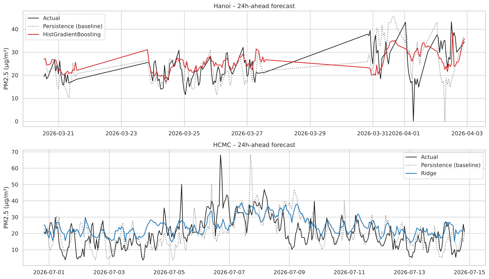
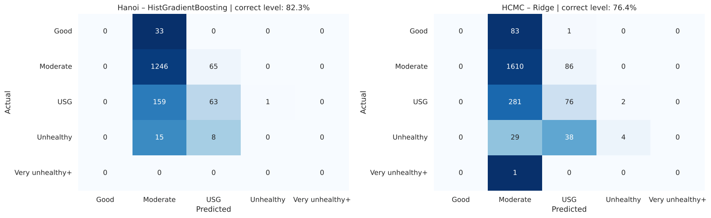
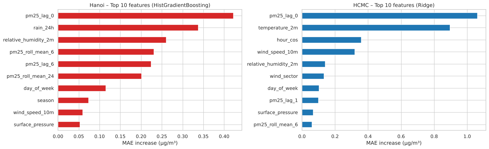

Programming Foundations for Data Analysis and Visualization · Semester 261 (2026–2027)
Part 3 — Time Series: 24-Hour-Ahead PM2.5 Forecasting, Hanoi vs Ho Chi Minh City
| Member | Student ID | Contribution |
|---|---|---|
| [Full name] | [Student ID] | Data collection, notebook, report |
- Notebook on GitHub · Open in Google Colab (Run all)
- Executed copy with all outputs · Dataset (CSV)
- PDF report · YouTube presentation: to be added
In one paragraph. We collected 22 months of hourly PM2.5 (OpenAQ) and weather (Open-Meteo) data for one station in Hanoi and one in Ho Chi Minh City (HCMC), and forecast PM2.5 24 hours ahead. On an untouched, chronologically last Test set, the best model lowers the MAE of the naive Persistence forecast by 13.5% in Hanoi (HistGradientBoosting, 8.32 → 7.20 µg/m³) and by 10.6% in HCMC (Ridge, 9.53 → 8.52 µg/m³), and predicts the correct US EPA air quality level in 82.3% / 76.4% of hours. The best model type differs by city, and both models under-forecast polluted hours.
1. Problem and questions
At hour t, using the PM2.5 history and the current weather, forecast PM2.5 at t + 24h (the same hour tomorrow) — a time series regression problem. Hanoi (four seasons, winter temperature inversion) and HCMC (wet/dry seasons) have different pollution mechanisms, so we apply the same pipeline to each city independently and ask:
- How much better than a naive baseline can machine learning forecast PM2.5 one day ahead in each city?
- Which city is harder to forecast, and what drives PM2.5 in each place?
Every model must beat the Persistence baseline ŷ(t+24) = pm25(t), which here is also the 24h seasonal-naive forecast.
2. Dataset (self-collected)
| Component | Source | Notes |
|---|---|---|
| PM2.5 – Hanoi | OpenAQ v3, station 46 Luu Quang Vu (Hanoi Air Quality Monitoring Network) | City monitoring station; 32.8% of hours missing |
| PM2.5 – HCMC | OpenAQ v3, station CMT8 (AirGradient) | Low-cost sensor; 8.4% of hours missing |
| Weather | Open-Meteo Historical Weather API | Temperature, humidity, precipitation, wind speed/direction, pressure, cloud cover |
Period 01/12/2024 – 30/09/2026: 16,056 hourly rows × 11 columns per city on a complete hourly grid (Vietnam time), where hours without a
measurement are NaN. The crawler (scripts/crawl_air_quality.py) is reproducible and falls back to Open-Meteo Air Quality (CAMS) if
no OpenAQ key is available.
Key EDA findings. Mean PM2.5 is similar (31.7 vs 32.1 µg/m³) and exceeds the WHO 24h guideline (15 µg/m³) in 56% (Hanoi) and 82% (HCMC) of hours, but the shapes differ: Hanoi is more volatile (std 20.6 vs 16.3) with a strong winter peak (January 55 vs August 19 µg/m³), and correlates with temperature (−0.31) and pressure (+0.31); HCMC has a narrower seasonal range, a 7h rush-hour peak and its strongest link to wind speed (−0.36). The autocorrelation drops from 0.92 / 0.88 at lag 1h to 0.56 / 0.45 at lag 24h, so a day-ahead forecast is much harder than a next-hour one.


3. Data preparation
- Cleaning: negative or > 1000 µg/m³ values and "stuck sensor" runs (≥ 6 identical hours) are set to missing (none were found).
- Missing values: only short gaps (≤ 6h) are interpolated in time — missing PM2.5 falls from 32.8% → 26.0% (Hanoi) and 8.4% → 7.3% (HCMC).
Longer gaps are not filled (that would fabricate data); samples without a target are dropped, remaining feature gaps use a median
SimpleImputerfitted on Train. - Outliers: the IQR rule (k = 3) flags 146 (1.23%) and 122 (0.82%) hours. They are real pollution events, so they stay in the target;
only the PM2.5 features are clipped by a custom
IQRClippertransformer learned on Train. - Features (23): PM2.5 lags (0–23h) and rolling statistics, weather at t plus 24h rain total, cyclic hour of the forecast time (numerical,
StandardScaler), and season, day of week and 8-sector wind direction (categorical,OneHotEncoder) — 39 columns after encoding. Calendar features describe the target time t + 24h, which is known in advance, so they do not leak. - Split: chronological 70 / 15 / 15 Train / Validation / Test with a 24h gap before each boundary, so no target leaks into the next set.
All preprocessing lives in one
ColumnTransformer+Pipelinefitted on Train only.

4. Modeling
Models: Persistence (baseline), Ridge, RandomForest and HistGradientBoosting. Ridge and HGB are tuned with
GridSearchCV on TimeSeriesSplit(3) (MAE); RandomForest uses a fixed, regularized configuration. A CityForecaster
class runs the whole flow for one city. Validation results (used to choose hyperparameters and compare models):
| Model | MAE Hanoi | MAE HCMC | R² Hanoi | R² HCMC |
|---|---|---|---|---|
| Persistence (baseline) | 14.97 | 7.71 | -0.063 | -0.154 |
| Ridge | 12.61 | 7.07 | 0.337 | 0.144 |
| RandomForest | 12.45 | 7.57 | 0.318 | 0.065 |
| HistGradientBoosting | 12.47 | 7.45 | 0.293 | 0.087 |
All ML models beat the baseline on Validation in both cities. The baseline's R² is negative: copying today's value is worse than predicting the mean. In HCMC the signal is weak (R² ≤ 0.15) and the strongly regularized Ridge (alpha = 100) is best.
5. Results on the Test set
Each model is retrained on Train + Validation and evaluated once on Test.
| City | Model | MAE (µg/m³) | RMSE (µg/m³) | R² | MAE vs baseline |
|---|---|---|---|---|---|
| Hanoi | Persistence (baseline) | 8.32 | 11.61 | -0.200 | +0.0% |
| Hanoi | Ridge | 7.27 | 9.92 | 0.124 | +12.6% |
| Hanoi | RandomForest | 7.23 | 9.57 | 0.184 | +13.1% |
| Hanoi | HistGradientBoosting | 7.20 | 9.63 | 0.175 | +13.5% |
| HCMC | Persistence (baseline) | 9.53 | 12.94 | 0.079 | +0.0% |
| HCMC | Ridge | 8.52 | 11.40 | 0.286 | +10.6% |
| HCMC | RandomForest | 8.80 | 11.74 | 0.243 | +7.6% |
| HCMC | HistGradientBoosting | 8.69 | 11.57 | 0.264 | +8.7% |


Answer to question 1. Machine learning helps in both cities, by about 14% (Hanoi) and 11% (HCMC) in MAE. Hanoi benefits from non-linear models (interactions of rain, season and recent dust); HCMC is best served by a linear model. Absolute MAE should not be compared between cities because the Test periods differ; relative improvement over the baseline is the fair comparison.
6. Error analysis and drivers
PM2.5 forecasts are mapped to US EPA 2024 levels (Good ≤ 9, Moderate ≤ 35.4, USG ≤ 55.4, Unhealthy ≤ 125.4 µg/m³) to build a level confusion matrix.

The main weakness is under-forecasting polluted hours: forecasts are pulled towards the mean, so the model follows the trend but is not yet a reliable early-warning tool. The error also grows at the end of the Test period (HCMC: 3.2 µg/m³ in late June → 10.9 in September) when pollution rises again, and HCMC's error peaks in the daytime (9.9 µg/m³ at 14h).

pm25_lag_0 (0.42), rain_24h (0.34), relative_humidity_2m (0.26), pm25_roll_mean_6 (0.23), pm25_lag_6 (0.22). HCMC: pm25_lag_0 (1.06), temperature_2m (0.90), hour_cos (0.36), wind_speed_10m (0.32), relative_humidity_2m (0.14).Answer to question 2. The current PM2.5 level matters most in both cities. Beyond it, Hanoi depends on rain over the last 24h and humidity (weather regimes, wash-out), while HCMC depends on temperature, hour of day and wind speed (daily traffic rhythm and dispersion). This matches the EDA and supports training a separate model per city. Hanoi is the harder city in absolute terms (higher volatility and winter peaks), while HCMC gives the smaller relative gain over the baseline.
7. Conclusions, limitations and future work
- Conclusion: one reusable pipeline, trained independently per city, beats the baseline by 13.5% (Hanoi) and 10.6% (HCMC) in Test MAE and gets the AQI level right in 76–82% of hours.
- Limitations: one station per city (HCMC is a low-cost sensor); Hanoi's Test set contains no winter; only 22 months of data (fewer than two seasonal cycles); weather features are observations at t, not forecasts for t + 24h; polluted hours are under-forecast.
- Future work: add weather forecasts and more stations; weight high-pollution hours or add an exceedance classifier for early warning; try SARIMAX, multi-horizon LightGBM or LSTM once longer data is available.
All numbers in this report are read automatically from the executed notebook (scikit-learn 1.9.1, random_state = 42). Tree-model results can shift by a few hundredths of µg/m³ across scikit-learn versions; Ridge and the baseline do not change.